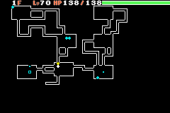
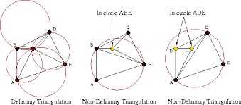
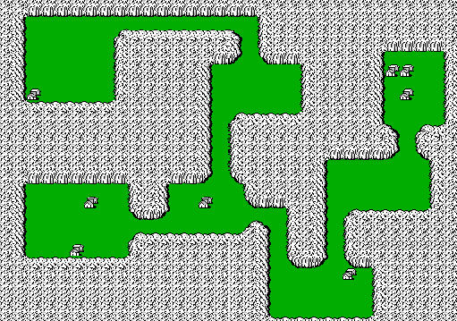
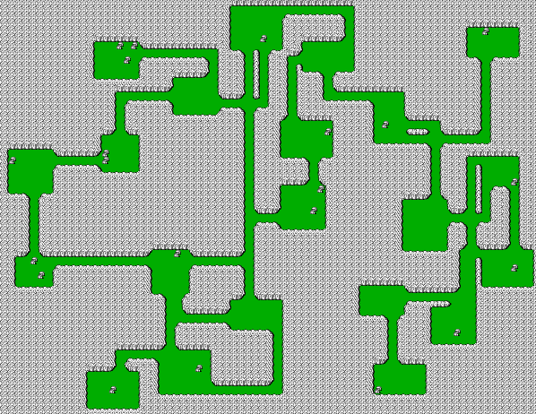

Procedural Content Generation
A dungeon generator inspired by Pokémon Mystery Dungeon, built with Java and Processing.
View source on GitHub
From rooms to a dungeon
For CSC 484 (Game AI) at NC State University, I was tasked with generating larger areas connected by smaller passages. I wanted to recreate the room-and-hallway layouts of Pokémon Mystery Dungeon, using Java and Processing.
The generator combines random room placement with a graph of possible connections, then turns those connections into horizontal and vertical corridors.

Placing the rooms
The algorithm makes a configurable number of attempts to place rooms of varying sizes. A room is rejected if it falls within a configurable minimum distance of another room, leaving space between the accepted rooms.
Finding candidate connections
I run a Delaunay triangulation over the center points of the rooms to build a set of candidate connections. The goal was to favor connections between nearby rooms rather than connect every room to every other room.
Those edges become a graph weighted by connection length, ready for the next step.

Keeping the dungeon connected
A minimum spanning tree reduces the graph to a connected set of edges. To get closer to the layouts that inspired the project, I also added a configurable percentage of extra edges, creating alternate routes beyond the tree.
Carving the hallways
Each selected connection becomes a hallway made from horizontal and vertical sections. The generator randomly chooses which direction to start with, then turns when it reaches the destination’s x or y coordinate.
After tuning the generation parameters, I rendered the layouts using a tileset from the NES version of Final Fantasy I.
Generated layouts
Two more samples from the original application show the variation in room sizes, spacing, and hallway connections.



